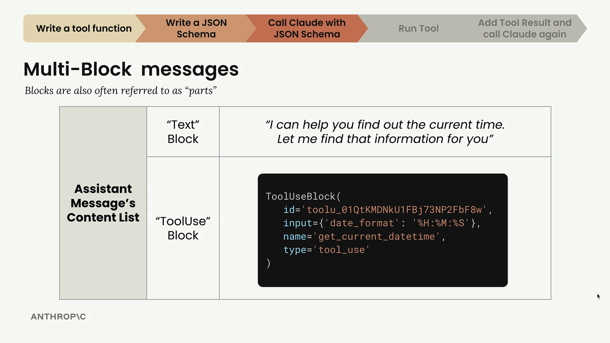
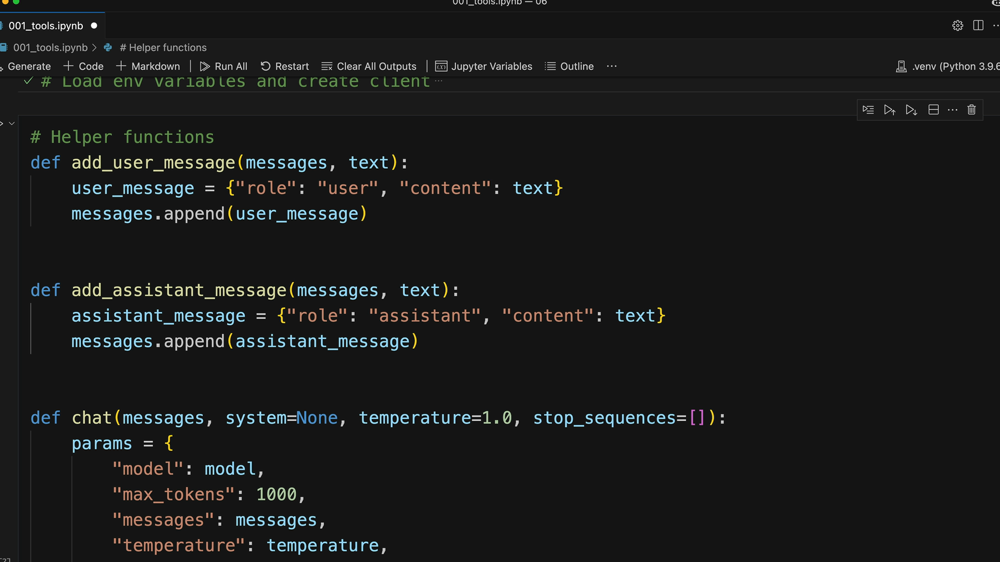

Блоки сообщения
Чему научитесь
Видео 5:44 и текст урока
К концу урока вы сможете:
- передать инструменты в API через параметр
tools; - разобрать ответ из нескольких блоков:
textиtool_use; - правильно сохранять такой ответ в истории разговора.
Видео и текст урока.
Смотреть урок на Skilljar Handling message blocks · 5:44Работая с инструментами Claude, вы столкнётесь с новой структурой ответа, не похожей на простые текстовые ответы, которые вы видели раньше. Вместо одного текстового блока Claude теперь может вернуть сообщение из нескольких блоков — с текстом и с информацией о вызове инструмента.
Запрос к API с инструментами
Чтобы Claude мог пользоваться инструментами, добавьте в вызов API параметр tools. Запрос выглядит так:
messages = []
messages.append({
"role": "user",
"content": "What is the exact time, formatted as HH:MM:SS?"
})
response = client.messages.create(
model=model,
max_tokens=1000,
messages=messages,
tools=[get_current_datetime_schema],
)
Параметр tools принимает список JSON-схем, описывающих функции, которые может вызывать Claude.
Сообщения из нескольких блоков
Когда Claude решает воспользоваться инструментом, он возвращает сообщение ассистента, в списке content которого несколько блоков. Это заметное отличие от простых текстовых ответов, с которыми вы работали до сих пор.

tool_use с input {"date_format": "%H:%M:%S"}. Блоки ещё называют «parts».В сообщении из нескольких блоков обычно есть:
- текстовый блок — понятный человеку текст о том, что делает Claude (например, «I can help you find out the current time. Let me find that information for you»);
- блок ToolUse — инструкция для вашего кода: какой инструмент вызвать и с какими параметрами.
В блоке ToolUse есть:
- ID — для отслеживания вызова инструмента;
- имя функции, которую нужно вызвать (например,
"get_current_datetime"); - входные параметры в виде словаря;
- тип
"tool_use".
История разговора с такими сообщениями
Помните, что Claude не хранит историю разговора — ею нужно управлять самим. Работая с ответами с инструментами, нужно сохранять всю структуру content, включая все блоки.
Вот как правильно добавить многоблочное сообщение ассистента в историю:
messages.append({
"role": "assistant",
"content": response.content
})
Так сохраняются и текстовый блок, и блок вызова инструмента — это необходимо, чтобы в следующих вызовах API у Claude был контекст разговора.
Полный цикл использования инструмента

add_user_message, add_assistant_message и chat.Использование инструмента идёт по такой схеме:
- отправить сообщение пользователя вместе со схемой инструмента;
- получить сообщение ассистента с текстовым блоком и блоком вызова инструмента;
- извлечь данные об инструменте и выполнить саму функцию;
- отправить результат инструмента обратно Claude вместе со всей историей разговора;
- получить итоговый ответ Claude.
На каждом шаге нужно аккуратно обращаться со структурой сообщений, чтобы у Claude был весь контекст для точного ответа.
Обновляем вспомогательные функции
Если вы пользовались вспомогательными функциями вроде add_user_message() и add_assistant_message(), их нужно обновить для многоблочного содержимого. Текущие версии, скорее всего, поддерживают только один текстовый блок, а теперь им нужно принимать более сложные структуры с блоками вызова инструментов.
Обработка многоблочных сообщений необходима, чтобы строить надёжные приложения, которые без сбоев встраивают инструменты Claude и сохраняют правильный ход разговора.
Дальше
Следующий шаг — выполнить функцию и отправить её результат обратно Claude в блоке tool_result.
Оригинал урока: Handling message blocks.